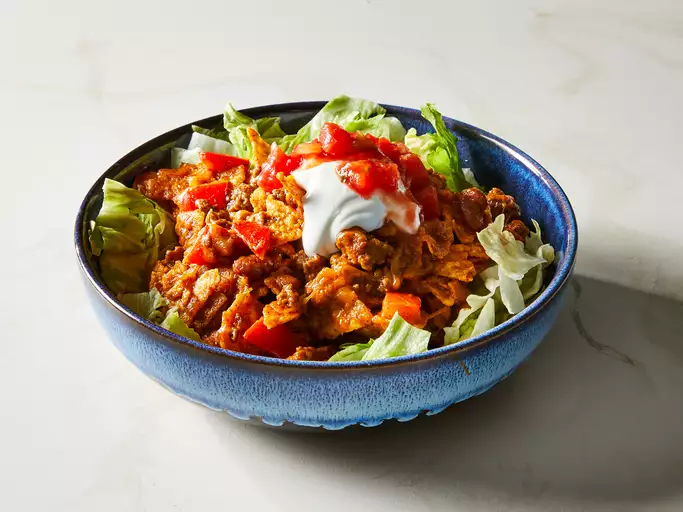

Tacosalad Recipe

Description
This taco salad is a tasty twist on the conventional taco salad. And the children have fun helping me prepare all the extras before we mix it all together! You can also place the spicy beef and toppings in individual serving bowls and allow people to assemble their own salads.
Ingredients
- Beef: This meaty taco salad starts with a pound of lean ground beef.
- Beans: You’ll also need a can of chili beans.
- Dressing: Use store-bought or homemade French salad dressing. You can easily omit this ingredient if you prefer a more traditional flavor.
- Seasoning: Use store-bought or homemade taco seasoning mix.
- salt and ground black pepper to taste
- Chips: Crushed tortilla chips add welcome crunch and salty flavor.
- Lettuce: You can’t have taco salad without shredded iceberg lettuce!
- Toppings: Top your taco salad with Cheddar cheese, tomatoes, salsa (store-bought or homemade, of course), and sour cream.
Steps
- Cook the beef, then stir in the beans, dressing, and seasoning.
- Place crushed chips in a bowl, then top with lettuce, cheese, and tomatoes.
- Mix in the meat mixture.
- Finish the taco salad bowls with sour cream and salsa.